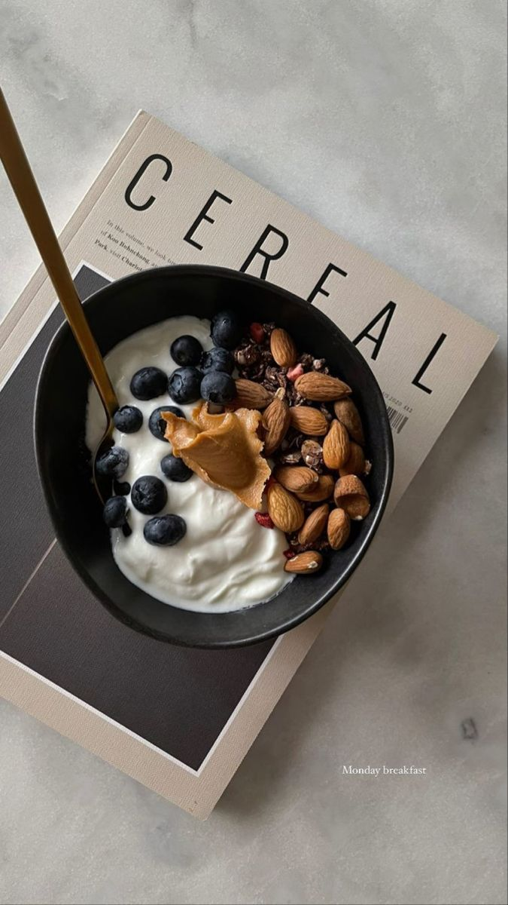
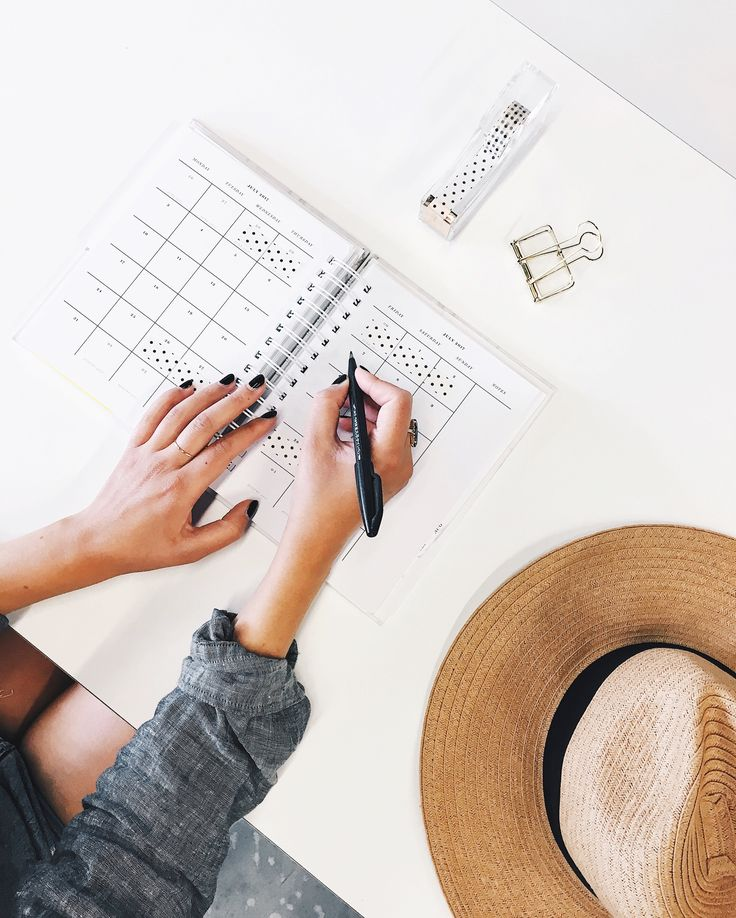
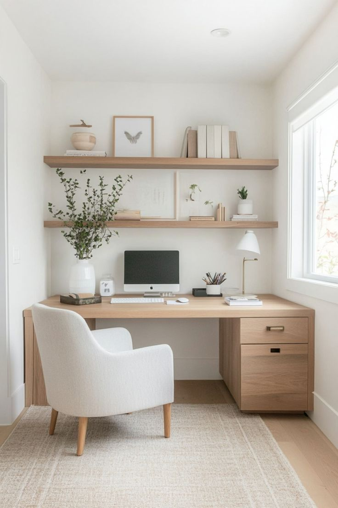

January 12, 2025 | 3comments
Finding simplicty in life
Life can get complicated really quickly. One moment, everything seems perfectly aligned, and then the next, unforeseen challenges arise, disrupting the balance. Whether it’s personal relationships, work pressures, or just the unpredictability of the world around us, navigating through complexity can feel like writing an intricate piece of code. Each decision, action, and interaction can lead to unexpected outcomes, sometimes requiring us to debug and adapt. But just like in coding, it’s the learning and growth through the process that ultimately brings clarity and resolution.
CONTINUE READING

January 12, 2025 | 3comments
Keeping cooking simple
Keeping cooking simple is about focusing on fresh ingredients, easy techniques, and recipes that don’t require a lot of time or fuss. Instead of elaborate dishes with dozens of ingredients, simplicity allows you to appreciate the natural flavors of what you’re cooking. A few basic seasonings, a well-balanced combination of textures, and a little bit of creativity can turn even the most humble ingredients into a satisfying meal. Whether it's a one-pan dinner, a quick stir-fry, or a comforting soup, simplicity in the kitchen often leads to the most enjoyable and stress-free meals.
CONTINUE READING

January 12, 2025 | 3comments
Simplicity and work
Simplicity in work is about focusing on what truly matters and eliminating unnecessary complexity. It’s about streamlining tasks, organizing priorities, and embracing efficiency without sacrificing quality. When we break down large projects into smaller, manageable steps, it becomes easier to make progress and maintain clarity. By minimizing distractions and avoiding over-complication, we free up mental space to think more creatively and work more effectively. Simplicity also fosters better communication, as it makes it easier to align team goals, share ideas, and make decisions. In the end, embracing simplicity in work leads to a clearer path, less stress, and greater productivity.
CONTINUE READING

January 12, 2025 | 3comments
Simple decorations
Simple decorations are all about elegance through minimalism. Instead of overwhelming a space with too many items, it’s about choosing a few thoughtful pieces that make a statement. Clean lines, neutral colors, and natural textures can bring a sense of calm and balance to any room. A vase of fresh flowers, a single piece of artwork, or a well-placed candle can transform a space without crowding it. Simple decorations focus on quality over quantity, highlighting the beauty of the space itself while adding just enough to create warmth and personality.
CONTINUE READING